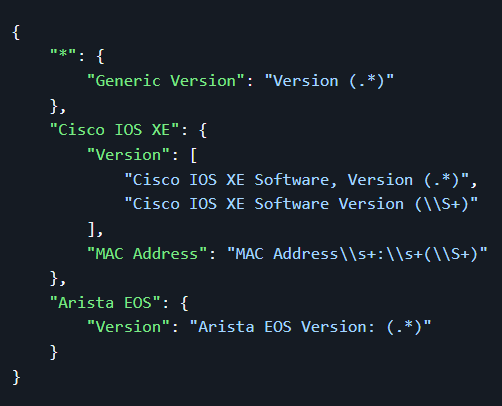
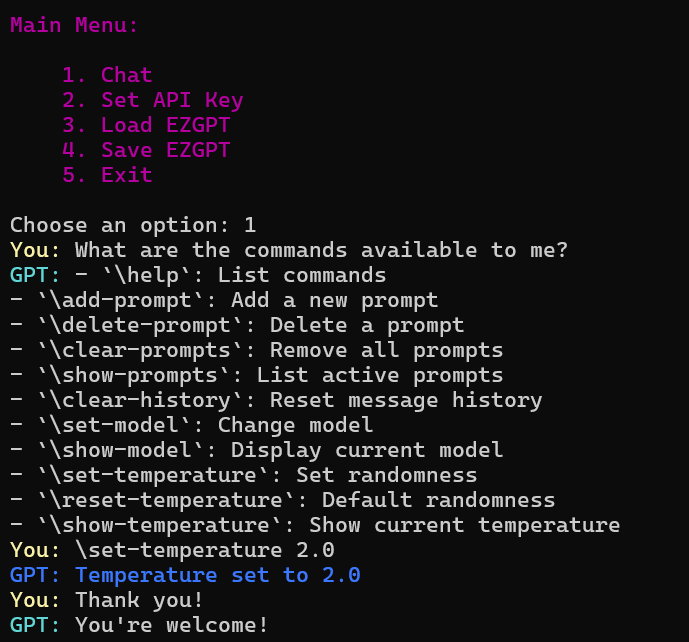
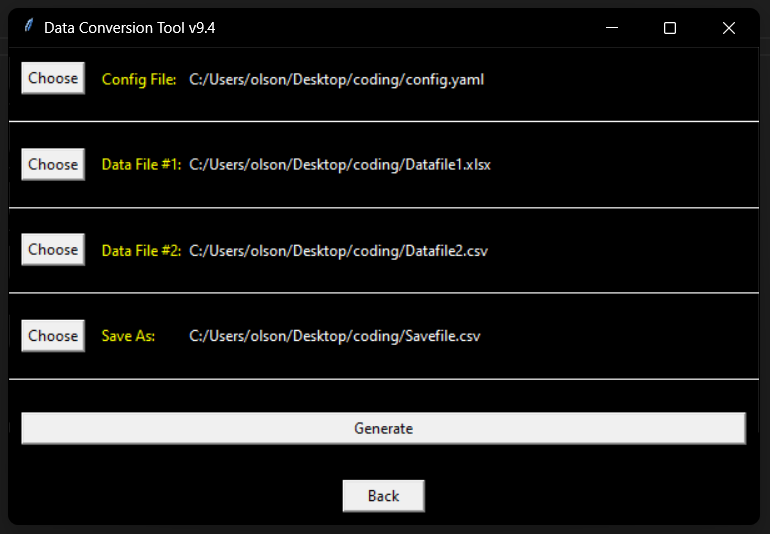

About Me
I am a certified networking professional (CCNA, Linux+, PCAP) with an ever-growing passion for network automation and software development. Currently, I am diving into API development and exploring REST through personal projects (detailed below). My curiosity drives me to tinker with software, often exploring solutions to self-created challenges just to see what happens. However, I'm not afraid to reinvent the wheel if there's something of value to be learned along the way, always embracing creative challenges that test me. I see a future where network engineering and software engineering merge, and I aspire to bridge that gap.
Personal Projects
Quickparse
Quickparse is a project that allows for creation of regex templates with JSON/YAML to parse text and log files. It identifies files with keywords and performs subsequent regex extraction. Comparisons are supported as well, with an option to include a folder of reference files that will output what target files did and didn't match the reference files. Quickparse is highly portable, utilizing the best of Python's standard library to achieve multiprocessing and multithreading.
EZGPT
EZGPT is a wrapper around OpenAI's GPT SDK designed to simplify operations. It streamlines quick experiments by turning useful parameters into executable commands, eliminating the need to research simple settings. Commands include changing the model, adjusting temperature, setting system prompts, and more. API key not included!
Pokedex CLI

Pokedex CLI is an interactive command-line application designed to explore Pokémon data in a user-friendly way. It has served as my primary project for understanding HTTP, REST, API integration, and Python's cmd module. The program fetches real-time data from PokeAPI, allowing users to search for Pokémon, view their stats, moves, or compare any two Pokémon side by side.
Business Projects
Data Processing
I've written multiple applets and scripts that utilize pandas for matrix operations and abstract data conversions from various sources into a single operation. Depending on the specific requirements, I have worked with libraries such as csv for file handling, json and pyyaml for configuration management, regex for advanced pattern matching and text processing, os for system validation, and tkinter for building user-friendly interfaces.